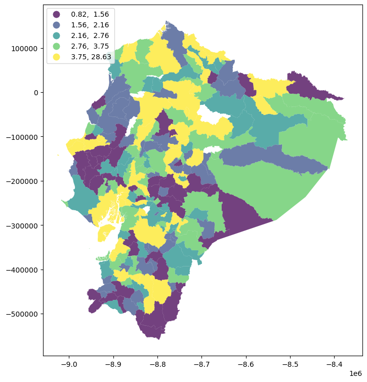

9. Autocorrelación global#
9.1. Introducción#
Los métodos de estadística espacial también se denominan análisis exploratorio de datos espaciales (ESDA). Las estadística espacial comprende métodos para probar la existencia de procesos de autocorrelación espacial. Las medidas de autocorrelación espacial se utilizan para evaluar la correlación de variables con respecto a la ubicación espacial.
La autocorrelación espacial significa que las observaciones geográficamente cercanas son más similares entre sí que las distantes. Esto hace posible predecir valores en un punto dado, conociendo los valores en otras ubicaciones.
La medida de autocorrelación espacial se puede utilizar de varias formas: para probar la existencia de autocorrelación espacial y características de la población; para determinar el grado de autocorrelación, por ejemplo, la distancia por encima de la cual las observaciones son independientes; determinar el modelo teórico apropiado para la estructura espacial observada o concluir sobre el proceso espacial.
Con base en las conclusiones de la ESDA, se puede rechazar la hipótesis de la aleatoriedad espacial, lo que abre el camino a la búsqueda de conglomerados espaciales (Anselin, 1999). Las conclusiones de la ESDA también son la base para la especificación espacial de los modelos.
9.1.1. Estadístico de Autocorrelación: una forma general#
Medida de similaridad
El producto vectorial: \(y_iy_j\)
Bajo aleatoriedad, el producto vectorial no es sistemáticamente grande o pequeño.
Cuando valores altos están sistemáticamente juntos, el producto vectorial será grande y vice versa.
Medidas de DIsimilaridad
Dos medidas comunides de disimilaridad son:
diferencia al cuadrado \((y_i-y_j)^2\)
diferencia absoluta \(|y_i-y_j|\)
Bajo aleatoriedad, la medida de disimilitud no es sistemáticamente grande o pequeño.
Cuando valores altos están sistemáticamente juntos, el producto vectorial será grande y vice versa.
Similaridad posicional
Los pesos espaciales \(w_{ij}\) formalizan la noción de vecinos (vecinos en algún sentido).
Una forma en que se puede plantear un estadístico general de autocorrelación como
suma de todas las parejas del producto de una medida de similaridad de la variable y un indicador de vecindad (peso espacial)
donde \(f(x_ix_j)\) denota una forma funcional de la similaridad entre \(i\) y \(j\) para la variable \(x\). \(w_{ij}\) es el peso espacial entre \(i\) y \(j\).
En estadística espacial se utilizan dos tipos de medidas: medidas globales y locales.
Por un lado, las medidas globales se plasman en un indicador de autocorrelación espacial o similitud general de regiones. Su ventaja es que es un indicador sintética y su desventaja es promediar.
Por otro lado, gracias a las estadísticas locales, que se determinan para cada región, se puede responder a la pregunta de si la región está rodeada de regiones con valores altos o bajos o si es similar/diferente a las regiones vecinas. Los valores de las estadísticas locales no se generalizan para toda el área analizada y se trabaja con información sobre la posición de cada región en relación con los vecinos.
El uso de técnicas ESDA es el primer paso en el análisis de datos espaciales y permite la detección de patrones de autocorrelación espacial globales y locales en los datos.
La autocorrelación global se puede medir mediante las estadísticas I de Moran global (Moran, 1950; Cliff & Ord, 1981) y C de Geary.
Las medidas locales más utilizadas incluyen las estadísticas locales Moran’s II y las estadísticas locales Geary’s Ci, que forman parte del llamado indicador local de asociación espacial (LISA) (Anselin, 1995) y las estadísticas locales G Getis-Ord (Ord & Getis, 1995).
Las estadísticas globales pueden identificar conglomerados y relaciones espaciales solo para todo el sistema. Sin embargo, estas estadísticas se pueden desagregar en estadísticas locales, gracias a las cuales se pueden detectar patrones de relaciones espaciales locales entre las regiones y sus vecinos.
El cálculo de LISA permite detectar cuál de las regiones influye fuertemente en la formación de conglomerados locales y examinar los conglomerados locales no aleatorios, los denominados puntos calientes/fríos (hot spots o cold spots), inestabilidad local (heterocedasticidad), observaciones atípicas significativas (Ministeri, 2003). La siguiente tabla resume algunas de las características listadas:
Estadístico |
Tipo |
Tipo de medición |
Interpretación |
Funciones en |
|---|---|---|---|---|
Moran’s I |
Global |
Una medida de autocorrelación espacial |
\(I> 0\): autocorrelación espacial positiva, los valores de observación a la distancia \(d\) son similares |
|
Geary’s C |
Global |
Una medida de autocorrelación espacial |
\(0 <C <1\): autocorrelación espacial positiva, los valores de observación a la distancia \(d\) son similares |
|
Join-count |
Global en grupos |
Una medida de autocorrelación espacial |
\(H_0\) asume que no hay autocorrelación espacial, el valor \(p>\alpha\) confirma esta hipótesis |
|
Local Moran’s \(I_i\) |
Local |
Junto con Local Geary, crea LISA, una medida de relaciones espaciales. |
valor \(p <\alpha\): rodeado por valores relativamente altos, un grupo de valores altos |
|
Local Geary’s \(C_i\) |
Local |
Junto con Local Moran, crea LISA, una medida de diversidad espacial |
valor \(p> (1-\alpha)\): positivo, región rodeada de observaciones similares valor \(p <\alpha\): negativo, región rodeada por diferentes observaciones |
Existe el comando |
Local \(G_i\), \(G^*\) |
Local |
Medida de relaciones espaciales |
\(G_i> 0\): área rodeada por valores relativamente altos, clúster de alto valor |
|
Local \(H_i\), LOSH |
Local |
Medida de relaciones espaciales |
Interpretado junto con las estadísticas \(G^*\). Valores altos indican un entorno heterogéneo; valores bajos indican homogeneidad local. |
|
Empirical Bayes index |
Local |
Medida de relaciones espaciales |
Interpretado como las estadísticas I de Moran, utilizadas por interés (por ejemplo, número de casos / población) |
|
Table: Estadísticos espaciales globales y locales. Fuente: @kopczewska2020applied. (\(\alpha\): nivel de significancia). |
Supuestos:
La estadística espacial se basa en varios supuestos. El más importante de ellos es la estacionariedad, lo que significa que los datos analizados deben tener una distribución normal con promedio y varianza constantes.
Sin embargo, las estructuras de autocorrelación espacial no siempre son constantes en toda el área de estudio, por lo que es suficiente satisfacer una estacionariedad débil, donde la media y la varianza son constantes, mientras que la autocorrelación depende solo de la distancia entre los objetos probados.
Los patrones espaciales deben ser isotrópicos; es decir, no deben depender de la dirección del estudio. Además, la forma del área estudiada afecta la intensidad, alcance y tipo de proceso espacial estimado, así como su importancia.
También existen los llamados efectos de borde (Fortin, Dale y Ver Hoef, 2002). Este problema se revela durante las observaciones en el borde del área de estudio. Estas regiones tienen menos vecinos que los objetos ubicados en el medio. Como resultado de este efecto, pueden aparecer diferencias en las estimaciones dependiendo de la matriz de vecindad adoptada (por ejemplo, de primer o segundo orden) (Cressie, 1993b).
Un elemento común en econometría espacial es el llamado retardo/rezago espacial, que se determina para la variable examinada. El operador de rezago espacial es un promedio ponderado del valor de la variable en las regiones vecinas, de acuerdo con la matriz de ponderaciones espaciales declarada \(W\).
Cuando se utiliza la matriz de vecindad de primer orden para el cálculo según el criterio de contigüidad, el rezago espacial será el promedio de los valores en las regiones limítrofes con el área examinada. Si se adoptara la matriz de segundo orden, el rezago espacial se determinaría a partir de los valores de los vecinos de estos vecinos. Una interpretación análoga ocurre cuando se usa la matriz de distancia o la matriz \(k\) de los vecinos más cercanos.
En las siguientes secciones usaremos datos de Valor agregado anual por cantones del Ecuador tomados del Banco Central del Ecuador y el indicador de Necesidades Básicas Insatisfechas por personas.
9.1.2. Una aplicación: el valor agregado bruto y la pobreza por necesidades insatisfechas#
Para leer los datos de un archivo shp de github usaremos la función read_git_shp:
import requests
from io import BytesIO
import zipfile
import geopandas as gpd
import tempfile
import os
def read_git_shp(nombre, url):
response = requests.get(url)
if response.status_code != 200:
raise Exception(f"Error al descargar shapefile: {response.status_code}")
zip_bytes = BytesIO(response.content)
with zipfile.ZipFile(zip_bytes, "r") as z:
shp_files = [f for f in z.namelist() if f.endswith(nombre + ".shp")]
if not shp_files:
raise FileNotFoundError(f"No se encontró {nombre}.shp en el zip")
shp_name = shp_files[0]
with tempfile.TemporaryDirectory() as tmpdirname:
z.extractall(tmpdirname)
gdf = gpd.read_file(os.path.join(tmpdirname, shp_name))
return gdf
# Uso correcto
url = "https://github.com/vmoprojs/DataLectures/raw/master/SpatialData/SHP.zip"
df = read_git_shp("nxprovincias", url)
Ahora importamos el valor agregado anual por cantones del Ecuador tomados del Banco Central del Ecuador y el indicador de Necesidades Básicas Insatisfechas por personas.
import pandas as pd
import geopandas as gpd
import requests
import zipfile
import io
import os
# 1. Leo los datos del VAB no petrolero por cantones 2007-2019
url_vab = "https://raw.githubusercontent.com/vmoprojs/DataLectures/master/SpatialData/VABNoPetroleroCantones2007-2019.csv"
datos = pd.read_csv(url_vab, sep=",")
# 2. Relleno con 0 los códigos de cantón que solo tienen 3 caracteres (para normalizar a 4 dígitos)
datos['COD_CANT'] = datos['COD_CANT'].astype(str)
datos.loc[datos['COD_CANT'].str.len() == 3, 'COD_CANT'] = '0' + datos.loc[datos['COD_CANT'].str.len() == 3, 'COD_CANT']
# 3. Filtrar los datos para el año 2019
datos = datos[datos['YEAR'] == 2019]
# 4. Leo los datos de población proyectada 2010–2020
url_poblacion = "https://raw.githubusercontent.com/vmoprojs/DataLectures/master/SpatialData/proyeccion_cantonal_total_2010-2020.csv"
poblacion = pd.read_csv(url_poblacion, sep=";")
# 5. Normalizo los códigos de cantón para que tengan 4 caracteres (agregando un 0 a los que tienen 3)
poblacion['CODIGO'] = poblacion['CODIGO'].astype(str)
poblacion.loc[poblacion['CODIGO'].str.len() == 3, 'CODIGO'] = '0' + poblacion.loc[poblacion['CODIGO'].str.len() == 3, 'CODIGO']
# 6. Leo los datos de Necesidades Básicas Insatisfechas (NBI)
url_nbi = "https://raw.githubusercontent.com/vmoprojs/DataLectures/master/SpatialData/NBI_PER_CANT.csv"
nbi = pd.read_csv(url_nbi, sep=";")
# 7. Normalizo los códigos de cantón
nbi['CODIGO'] = nbi['CODIGO'].astype(str)
nbi.loc[nbi['CODIGO'].str.len() == 3, 'CODIGO'] = '0' + nbi.loc[nbi['CODIGO'].str.len() == 3, 'CODIGO']
# 8. Uno los datos de población a los datos económicos usando el código de cantón
datos = datos.merge(poblacion[['CODIGO', 'A_2019']], left_on='COD_CANT', right_on='CODIGO', how='left')
# 9. Uno los datos de pobreza (NBI) a los datos existentes
datos = datos.merge(nbi[['CODIGO', 'POBRES_P']], left_on='COD_CANT', right_on='CODIGO', how='left')
# 10. Calculo el VAB per cápita: VAB dividido por la población proyectada en 2019
datos['VAB_PC'] = datos['VAB'] / datos['A_2019'] # miles de USD por persona
# 11. Descargo y leo el shapefile con los polígonos cantonales
url = "https://github.com/vmoprojs/DataLectures/raw/master/SpatialData/2012_nxcantones.zip"
poligonos = read_git_shp("nxcantones",url)
Una vez extraida la información y el shapefile, quitamos a Galápagos y juntamos los datos a poligonos
# 1. Filtro para excluir la provincia "90"
poligonos = poligonos[poligonos['DPA_PROVIN'] != "90"]
# 2. Filtro para excluir la provincia "20"
poligonos = poligonos[poligonos['DPA_PROVIN'] != "20"]
# 3. Hacer el merge entre los polígonos y los datos económicos por cantón
# Se usa la columna 'DPA_CANTON' del shapefile y 'COD_CANT' del DataFrame 'datos'
poligonos = poligonos.merge(datos, left_on='DPA_CANTON', right_on='COD_CANT', how='left')
# 4. Eliminar las filas que tienen valores faltantes en la variable 'POBRES_P'
# Esto equivale a quedarse solo con los cantones que tienen datos de pobreza
poligonos = poligonos[~poligonos['POBRES_P'].isna()]
#poligonos['POBRES_P'].isna()
Ahora construimos la lista de vecinos:
import geopandas as gpd
from libpysal.weights import Queen
from libpysal.weights import W
# 1. Construir la lista de vecinos usando contigüidad tipo Reina (equivalente a poly2nb)
# El parámetro silence_warnings=True es útil si hay geometrías sin vecinos
w_queen = Queen.from_dataframe(poligonos, silence_warnings=True,use_index=True)
# 2. Convertir la lista de vecinos a una matriz de pesos estilo "W" (filas normalizadas)
# Esto equivale a nb2listw(..., style="W") en R
# No hace falta especificar "zero.policy = TRUE" porque libpysal ignora por defecto las unidades sin vecinos
w_queen.transform = 'R' # "R" es row-standardized (igual que "W" en R/spdep)
# Si deseas acceder directamente a la matriz de pesos como un diccionario:
weights_matrix = w_queen.full() # O usar .neighbors y .weights para listas directas
# También puedes verificar qué observaciones no tienen vecinos:
islands = w_queen.islands # Lista de índices (cantones) sin vecinos
islands
[27, 61, 94, 100, 102, 106, 116, 117, 121, 133, 187, 188, 214]
poligonos.columns
Index(['DPA_VALOR', 'DPA_ANIO', 'DPA_CANTON', 'DPA_DESCAN', 'DPA_PROVIN',
'DPA_DESPRO', 'geometry', 'NOM_PROV', 'COD_PROV', 'NOM_CANT',
'COD_CANT', 'PRODUCCION', 'CONSUMO_INTERMEDIO', 'VAB', 'YEAR', 'TIPO',
'CODIGO_x', 'A_2019', 'CODIGO_y', 'POBRES_P', 'VAB_PC'],
dtype='object')
import matplotlib.pyplot as plt
# Reproyección a Web Mercator para usar contextily
poligonos = poligonos.to_crs(epsg=3857)
f, ax = plt.subplots(1, figsize=(9, 9))
poligonos.plot(
column="VAB_PC",
cmap="viridis",
scheme="quantiles",
k=5,
edgecolor="white",
linewidth=0.0,
alpha=0.75,
legend=True,
legend_kwds={"loc": 2},
ax=ax,
)
<Axes: >
